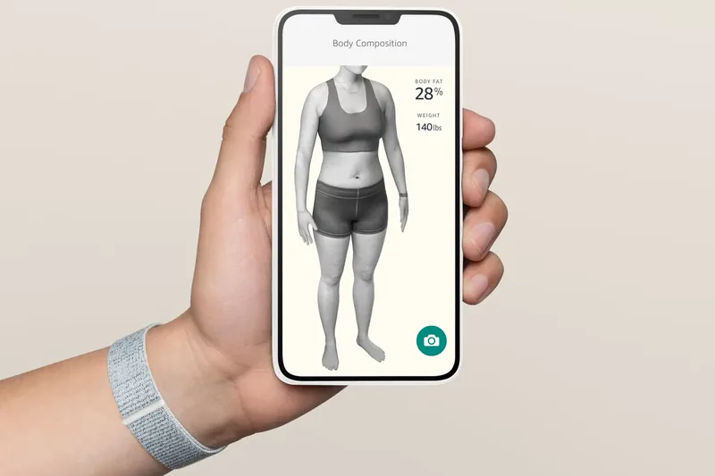
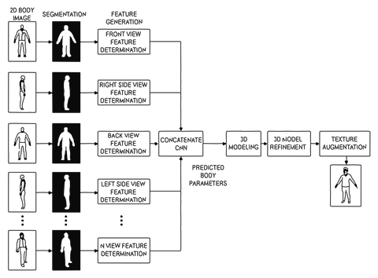
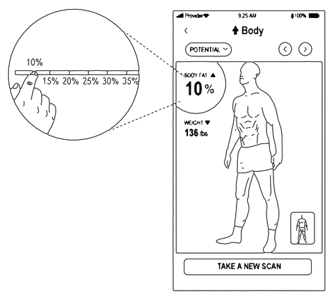

Halo Body
A phone scan that returned a member’s body fat percentage and a 3D model of their body.


- Role
- Product lead for Body, end to end
- Validated
- 134 adults, npj Digital Medicine, 2022
- Accuracy
- 2.2 points of error against a clinical scan; the best smart scale, 4.5
I led Halo Body end to end: body fat from two phone photos. Amazon’s CEO set the challenge, a scan close to the best body fat scanners. I moved its training labels to clinical instruments; in the published study its error was about half the best smart scale’s.
What I decided
Started from the claim we could publish
I started from what the customer would read: an accuracy claim we could publish. A claim measured against the most accurate scanners needed their readings to learn from.
Moved the training labels to clinical instruments
Our first models learned from fitness experts who judged body fat by eye. We changed the labels to readings from reference instruments: the model we validated learned from the body fat values of clinical X-ray (DXA) scans and never saw the images.
Made the scan itself part of quality
Feedback showed the scan itself was part of the quality members perceived, so we measured and improved it. From August 2021, members could stand about 1 to 2 feet (30 to 60 centimeters) closer, so Body worked in smaller rooms.
How it worked
An accurate body fat number needed a clinic
In 2020, measuring body fat accurately meant a DXA scan in a clinic, with a doctor’s prescription. An accurate scan cost people $75 to $150, and we did not think that made sense for customers.
Four coached photos, in any room
The aim was a fully automatic phone scan that worked at home, in any room and any light. A member stood 4 to 6 feet (1.2 to 1.8 meters) from the phone, in tight, minimal clothing, for four coached photos: front, back and each side.
The capture coach, step by step
The app coached four photos, checking the phone’s level, the distance and the pose, so any room could produce a usable scan.
Illustration
The data as a table
| Step | What the app coached |
|---|---|
| Level | The phone stands upright on a surface, about knee to waist high. |
| Distance | The member steps back, about 4 to 6 feet (1.2 to 1.8 m). |
| Pose | Arms and legs move into the outline on the screen. |
| Photos | Four photos: front, back, left and right. |
Three neural networks, results in seconds
In Amazon’s cloud, one neural network separated the person from the room. A second read body fat from the front and back photos only, and a third built a 3D model from the silhouettes. Results came back in seconds.

A 3D model, a number and a slider
Each member saw a 3D model of their own body beside their body fat percentage. A slider showed the same body at more or less body fat. The Verge, a technology news site, wrote that the slider “could also be literally dangerous for people with body dysmorphic disorder.” From launch day it stopped at the bottom of a healthy range for the member’s sex and age, and Body was for adults only.

Tested at two clinics against DXA
In a blinded study of 134 adults at two clinics, Body’s average error against DXA was the lowest of seven methods. Pennington Biomedical Research Center and Massachusetts General Hospital ran it. Amazon sponsored it and saw no DXA result until Body’s estimates were with the investigators; the model had never trained on clinic data. Body’s error stayed the lowest in every subgroup, by sex, body mass index and race.

Average error against a clinical DXA scan, in points
134 adults, 2022 studyLaunch

“Amazon’s Halo passes Pennington’s test for accurately measuring percentage of body fat”The Advocate, on the study’s results, June 2021
Body launched with Halo on 27 August 2020. The study’s results came out on 16 June 2021, and npj Digital Medicine, a Nature Portfolio journal, published the paper on 29 June 2022.
What came next
In September 2022, an independent study tested Body in 184 adults against a four-compartment model, which measures more components of the body than DXA. Only Body’s estimate passed its equivalence test, though results varied by sex and race. In 2025, four obesity and nutrition societies cited the 2022 study in an advisory on nutrition during glucagon-like peptide-1 (GLP-1) obesity treatment.